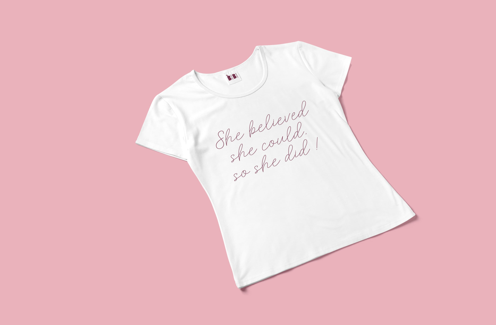
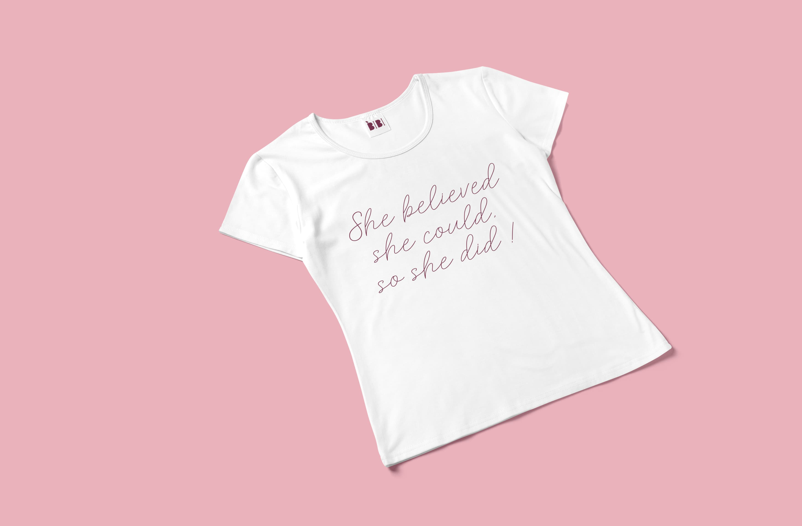

Brand design and Company fashion door Studio Suus
Bibi Is een jong bedrijf uitgebaat door 2 sterke vrouwelijke ondernemers.
Bibi is een samenwerking tussen een Voedingscoach en een Personal Trainer die zich focussen op het geven van Mealprep en Movement coaching aan vrouwen.
Ze willen een veilige en aangename omgeving creëeren specifiek voor vrouwen. Waar ze zichzelf op de plaats kunnen zetten en kunnen focussen
op het verwerven van een gezonde levensstijl. Deze gezonde levensstijl word op maat van de klant samengesteld door middel van toffe en gezonde recepten en motiverende
fitness coaching zowel persoonlijk als in groep.
Ik ben zelf ook klant en grote fan van Bibi en ondanks dat ze al met een grafisch ontwerper werken leek het mij een toffe uitdaging om voor hen
een fictieve huisstijl en company fashion lijn te maken. In het logo en in de huisstijl heb ik geprobeerd de nadruk te leggen op het vrouw vriendelijke doormiddel van
vrolijke en aangename kleuren en afgeronde vormen en typografie. De eenvoud van het logo zorgt er voor dat het gebruikt kan worden op voor allerlei vormen van drukwerk
als ook voor digitale doeleinden.


De uitbaters van Bibi sporten dagelijks tijdens het begeleiden van de trainings sessies en hebben dus ook aangepaste en gepersonaliseerde sportkledij nodig.
Daarom ontwierp ik een aantal basis outfits met optioneel bijpassende sport accessoires zoals een drink bus, handdoekjes en sport rugzakje.
Op het vlak van textielbedrukking geef ik graag ook technisch advies over de bedrukking of afwerking die het best past bij de noden van de klant.
Sport kledij is meestal van hele strechy en synthetische stoffen gemaakt waardoor de bedrukking best met digi-flex transfers gedaan zou worden.
(Dit is een techniek waarbij het geprinte ontwerp aan hoge temperatuur en druk geperst word op de textiel).
Dit zorgt voor een duurzamer en steviger resultaat , de bedrukking streched mee en kan vaak gewassen kan worden.
 
